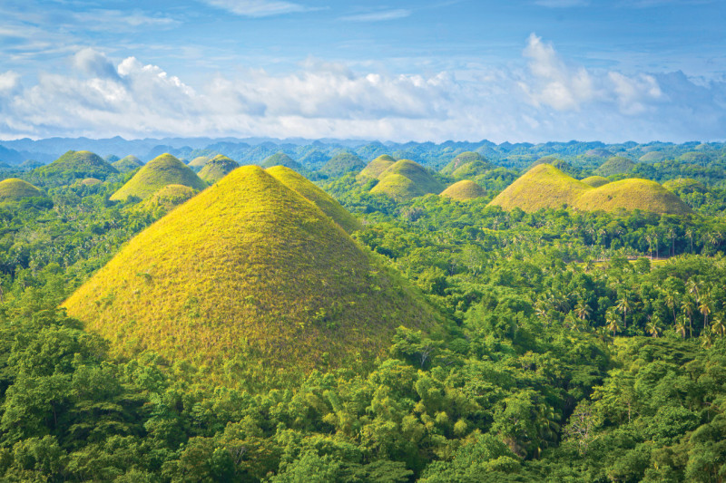

초콜릿 힐, 발리카삭섬 등 자연경관이 뛰어나 유네스코 세계자연유산 잠정목록에 올랐다. 
1~5월은 건기로 야외 활동하기 좋다. 4~5월은 낮기온이 높아 매우 덥다. 건기 중에서도 2~4월의 강수량 가장 적다. 기온은 12~3월까지 상대적으로 낮은 편이며 4월부터 낮기온이 올라 5월에 가장 덥다. 우기에는 비오는 날이 15일 정도로, 한낮에 1~2시간가량 스콜성 폭우가 쏟아지거나 밤새 비가 내린다.